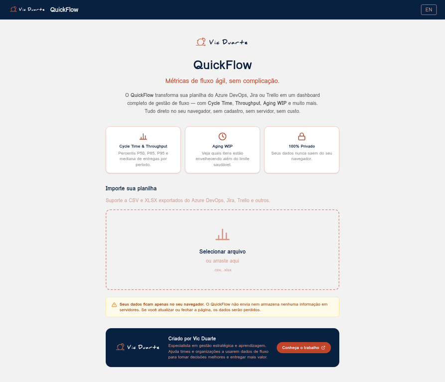

Ferramentas Open Source
Além de consultora e coach, desenvolvo ferramentas práticas para times ágeis. Gratuitas, abertas e focadas em resultado.
QuickFlow
Métricas de fluxo ágil, sem complicação.

Ferramenta gratuita para análise de métricas de fluxo ágil
Carregue sua planilha do Jira, Azure DevOps ou Trello e gere um dashboard completo em segundos — com Cycle Time, Throughput, Aging WIP, CFD e Histograma. Tudo direto no navegador, sem cadastro e sem custo.
Como surgiu: Desenvolvida com vibe coding usando Claude Code e Manus IA — uma prova de que consultores ágeis também podem criar ferramentas práticas para os times que apoiam.
O que você encontra no QuickFlow
Cycle Time
Visualize o tempo de ciclo das suas entregas com percentis P50, P85 e P95. Identifique gargalos e melhore a previsibilidade do time.
Throughput
Acompanhe a taxa de entrega do time ao longo do tempo. Entenda a capacidade real e planeje com base em dados históricos.
Aging WIP
Identifique itens em andamento que estão envelhecendo além do limite saudável. Atue antes que virem bloqueios críticos.
CFD (Cumulative Flow)
Diagrama de Fluxo Cumulativo para visualizar o fluxo de trabalho ao longo do tempo e detectar padrões de acúmulo ou bloqueio.
Histograma
Distribuição de frequência do Cycle Time em formato visual. Entenda a variabilidade das suas entregas de forma clara e objetiva.
Insights Automáticos
Análises automáticas baseadas no Método Kanban de David J. Anderson. O QuickFlow interpreta os dados e sugere ações de melhoria.
100% Privado — seus dados ficam só com você
O QuickFlow não envia nem armazena nenhuma informação em servidores. Todo o processamento acontece diretamente no seu navegador. Sem login, sem rastreamento, sem custo.
Compatível com exportações de: